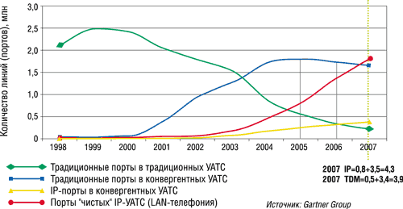
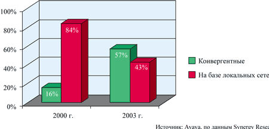

Ростислав Сергеев
IP-телефония, появившись почти как случайное изобретение, постепенно превратилась в одну из основных движущих сил мирового телекоммуникационного прогресса как на операторском, так и на корпоративном рынке. Правда, теперь речь идет скорее об IP-коммуникациях, которые подразумевают передачу по пакетным сетям не только речевых сообщений, но и данных, а также видео и ТВ в реальном масштабе времени.
Начавшись с очень простой идеи - поставить шлюзы VoIP для обхода дорогостоящих традиционных сетей с коммутацией каналов по более дешевым сетям передачи данных, сегодня IP-телефония представляет собой весьма сложное образование с многочисленными технологическими и бизнес-направлениями. Это абонентские и транзитные системы, центры обработки вызовов, IP-УАТС, IP-Сentrex, IP-телефоны и многое-многое другое. На тему IP-телефонии издаются книги и журналы, проходят многочисленные конференции, семинары, круглые столы и выставки.
В подмосковном Виноградово 12-14 ноября прошла восьмая ежегодная конференция по IP-телефонии, организованная компанией CompTek (http://www.comptek.ru). В этом году конференция стала еще представительнее, в ней приняли участие более 470 человек из 249 компаний, а география участников расширилась до 65 городов и 13 стран (СНГ и дальнего зарубежья). Большая часть времени была отведена секционным заседаниям по четырем потокам (корпоративный, операторский и два технологических), а в конце каждого дня проходили круглые столы по наиболее актуальным темам. В этом году темы их формулировались так: "Что и как операторы связи могут продавать под видом голосовых сервисов в IP-сетях?", "Что такое SBC - пограничные контроллеры сессий и нужны ли они?" и "Операторские центры - настоящее и будущее".
Корпоративная IP-телефония: "чистая" или конвергентная?
Как и в прошлом году, пленарное заседание было посвящено итогам и перспективам отрасли IP-телефонии, и представляли их главным образом компании-спонсоры. Как и в ноябре 2002 г., не обошлось без пикировки двух генеральных спонсоров - Avaya (http://www.avaya.ru) и Cisco Systems (http://www.cisco.ru). Эти фирмы, лидирующие в разных секторах продуктов для IP-телефонии, очень ревниво относятся к успехам друг друга и придерживаются разных подходов к корпоративной IP-телефонии. Первая, учитывая свою столетнюю историю, выступает приверженцем плавной миграции к новому поколению коммуникаций, в то время как вторая исповедует более революционный подход, всячески агитируя за скорейший и полный переход к "чистому" IP, не связанному с традиционными TDM-системами.
Наверное, многие помнят свалку традиционной телефонии, которую Cisco устроила на CeBIT'2000. На ней представители немецкого пролетариата беспощадно и в большом количестве уничтожали хотя и устаревшие, но еще вполне годные к использованию обычные телефоны. Но, как показало время, мало кто способен на такие радикальные шаги, и лавинообразного перехода на IP-телефонию пока не произошло. Тем не менее, как считает менеджер по развитию бизнеса Cisco Systems Арсений Тарасов, новое поколение, которое недавно родилось и пока вряд ли задумывается о технологиях современных телекоммуникаций, будет жить исключительно в эру IP. Именно благодаря IP стала возможна долгожданная унификация в коммуникациях, подобная той, которая произошла на базе Web-приложений в информационных системах. Возникает "новая телефония" - мобильная (ваш персональный номер всегда с вами там, где есть IP-подключение), интегрированная с бизнес-приложениями (системами CRM, справочником контактов, голосовой почтой и т. д.), интеллектуальная (за счет программируемой маршрутизации и обработки вызовов), многоликая (в роли телефонов могут выступать различные устройства - компьютеры, PDA и даже игровые приставки) и, наконец, недорогая (благодаря технологии VoIP).
Доклад г-на Тарасова под названием Generation IP (построенный на аналогиях с известным романом Виктора Пелевина и щедро сдобренный цитатами из него) очень эмоционально описывал достоинства IP и достижения Cisco на пути к светлому IP-будущему. Впрочем, успехи действительно впечатляют: только за прошлый год компания продала еще миллион IP-телефонов - столько же, сколько за все предыдущие годы, и более 10 тыс. из них нашли своих хозяев в России. В недалеком будущем, как считает Арсений Тарасов, их постепенно начнут заменять IP-видеотелефоны. Число клиентов, использующих решения IP-телефонии от Cisco, увеличилось почти вдвое, достигнув 10 тыс., а число установленных шлюзов VoIP превысило 13 млн. Среди последних технологических новинок фирмы - программное обеспечение Call Manager Express (CME), "заливаемое" непосредственно в маршрутизатор и превращающее его в офисную мини-АТС. Благодаря такому продукту небольшая фирма, въезжающая в новый офис и использующая доступ в Интернет, может обойтись без телефонной станции, телефонной проводки и даже телефонов. А если у нее организована беспроводная локальная сеть (RadioEthernet, Wi-Fi) - то и без всякой проводки вообще. В этом случае нужно будет только подключить маршрутизатор к сервис-провайдеру, установить точку беспроводного доступа (что занимает несколько минут), и сразу можно начинать полноценную работу на новом месте.
Тем не менее, если в прошлом году Cisco была безусловным лидером во всех основных секторах рынка IP-телефонии, то теперь, по данным исследовательской фирмы Synergy Research, которые привел в своем докладе Георгий Санадзе из компании Avaya, в корпоративном секторе на первое место по итогам первого полугодия 2003 г. вышла его фирма с долей около 20%, а вплотную к бывшему лидеру с долей около 18% приблизилась и компания Nortel Networks (http://www.nortelnetworks.ru). Успехи остальных традиционных поставщиков корпоративной телефонии на поприще IP пока не так значительны, хотя все они уже согласились, что будущее принадлежит этой технологии, и быстрыми темпами отвоевывают упущенные позиции.
Впрочем, как отметил г-н Санадзе, срок наступления этого будущего все время отодвигается. По его мнению, чем раньше делались прогнозы, тем ближе предполагался момент победы новой телефонии над традиционной. На волне Интернет-бума в 2000 г. предсказывалось, что это произойдет в 2003 г.; год-полтора назад эту дату отодвинули до 2005-2006 гг., а по последнему прогнозу Gartner Group, который был опубликован в августе нынешнего года (рис. 1), количество портов IP-телефонии в новых поставках превысит число традиционных телефонных портов только в 2007 г.
|  |
| Рис. 1. Рынок корпоративной телефонии (прогноз Gartner).
|
На сегодня доля IP-УАТС составляет около 20%. При этом, хотя в последние несколько лет популярность IP-решений и возрастает, число продаваемых портов традиционной телефонии тоже продолжает расти. Дело в том, что сейчас далеко не всем пользователям нужна вся функциональность IP-телефонии, но клиенты хотят иметь возможность перехода к таким решениям в будущем без существенных дополнительных затрат. Пока же они, как правило, не готовы платить более 150 долл. только за IP-телефон на каждом рабочем месте. По этой причине возросла популярность так называемых конвергентных решений (IP-еnabled - приспособленных к IP), в которых поддерживаются и традиционные TDM-линии, и новые IP-порты. Неуклонно падает лишь число TDM-портов, поставляемых с традиционными УАТС (на 12-16% ежегодно), в то время как число таких портов, поставляемых с конвергентными УАТС, растет более высокими темпами (рис. 2). По статистике Gartner Group, в Центральной и Восточной Европе за последний год общее число поставленных традиционных портов составило 2,8 млн (рост на 2%), в то время как поставки IP-портов, хотя и выросли более чем на 100%, пока составляют около 260 тыс. портов (из них "чистых" IP, т. е. IP-портов на базе IP-УАТС, - 187,5 тыс.). Если три года назад, по данным Synergy Research, во всем мире доля поставок IP-портов на базе "чистого IP" (LAN-телефонии) составляла более 80%, то сейчас она уменьшилась до 43% за счет увеличения доли конвергентных решений.
|  |
| Рис. 2. Доля "чистых" IP-портов в мире снижается.
|
По данным Avaya, в поставляемых клиентам УАТС пока примерно 20% составляют IP-порты, а остальные 80% можно со временем заменить на IP с помощью довольно щадящей операции замены некоторых системных плат. Пока же IP-порты в основном используются для межстанционных связей (транков) и организации удаленных рабочих мест.
В целом, как и год назад, главный вывод Георгия Санадзе таков: говорить о закате эры классической телефонии пока рано. Более того, сейчас этот вывод прозвучал более уверенно, и, по мнению г-на Санадзе, на данном этапе IP-телефония - это не замещающая, а дополняющая технология, в ближайшем будущем (до 2007 г.) будут доминировать конвергентные системы, компании же, сделавшие ставку только на IP, теряют рынок IP-портов.
Недавно о сходной с Avaya стратегии миграции к IP объявило подразделение Enterprise Networking компании Alcatel (http://www.alcatel.ru), которая, по данным Synergy Research, с рыночной долей 7-8% занимает 4-6 места (вместе c Siemens и Mitel) в общемировой IP-гонке. Два года назад доля этих "китов" индустрии традиционной телефонии в сфере корпоративной IP-телефонии не превышала 3-4%. По данным исследовательских фирм Dataquest и Dell'Oro, которые приводили руководители Alcatel Enterprise Networking, по итогам отдельных кварталов 2003 г. и в отдельных секторах Alcatel лидирует по поставкам IP-портов, IP-УАТС и IP-центров обработки вызовов. Конечно, статистику можно собирать и толковать по-разному, но ясно одно: такое господство Cisco и 3Сom, какое они имели на рынке корпоративной IP-телефонии два-три года назад, вряд ли повторится. "Тяжеловесы" корпоративной телефонии постепенно подтянулись и начинают догонять вырвавшихся вперед.
Перемены у операторов
На операторском рынке IP-телефонии наряду с продолжающимся ростом объемов трафика VoIP произошли качественные перемены: объявлено о крупных объединениях фирм, появились принципиально новые устройства.
Как отметил председатель конференции Игорь Масленников, генеральный директор компании CTI (http://www.cti.ru), IP-телефония все дальше уходит от правил и схем традиционной телефонии. Этап увода трафика из ТDM-сетей в IP заканчивается, необходима разработка качественно новых сервисов на базе IP, за которые пользователи готовы платить. Повышается значение гарантированного качества сервиса, возможности контролировать работу и безопасность сети. Если на прошлой конференции на операторском потоке много говорили о программных коммутаторах (SoftSwitch), которые позволяют централизованно управлять операторской сетью, внедрять сервисы, организовывать точный и аккуратный биллинг, то в этом году основное внимание было обращено на пограничные контроллеры сессий (Session Border Controller, SBC) - новые функциональные элементы IP-сетей. Они необходимы потому, что сигнализация в сетях IP-телефонии, которую обрабатывают программные коммутаторы, передается на пятом уровне модели OSI, а данные (телефонный трафик) - на третьем, где "живут" IP-маршрутизаторы. Но IP-маршрутизаторы, как правило, не могут выполнять контроль телефонного доступа, трансляцию и маршрутизацию телефонных номеров и обеспечивать качество телефонного сервиса (а не QoS для IP-сети). Все перечисленные пробелы в операторских сетях должны будут заполнить SBC.
Тезис о важности этой новинки подтвердил профессор Манфред Шнепс-Шнеппе из московской компании "Светец", побывавший в конце сентября на выставке Voice on the Net в Бостоне. Пограничные контроллеры, по его словам, были "гвоздем программы" на американской выставке. Впрочем, как выяснилось в ходе круглого стола, далеко не все операторы считают пока их использование необходимым. Тем не менее некоторые крупные поставщики услуг VoIP уже приобрели и установили такие продукты, в том числе разработки российской фирмы Mera Networks (http://www.mera.ru) из Нижнего Новгорода. Компания представила на конференции две новые функции, добавленные в состав ее пограничного контроллера MVTS, - графический интерфейс, позволяющий управлять работой системы в среде Windows, и конвертер протоколов SIP и Н.323 (SIP-HIT). Во время конференции, как сообщила директор Mera Networks по маркетингу Наталья Коробкова, была достигнута договоренность об использовании MVTS в сети крупнейшего VoIP оператора - компании ITXC (http://www.itxc.net).
Другое перспективное направление, которое, по прогнозам Gartner, может стать актуальным в течение ближайших лет, - системы IP-Centrex. Традиционные системы Centrex, в которых оператор управляет услугами (например, голосовой почтой или маршрутизацией звонков) и поддерживает необходимое для их реализации оборудование, в 70-80-х годах прошлого века уступили пальму первенства УАТС. В 1990-е годы, хотя такие системы и продолжали пользоваться относительной популярностью, особенно в Западной Европе, доля их в организации услуг телефонии для корпоративных пользователей не превышала 20%. В то же время, по данным исследовательской фирмы Research First, приведенных Натальей Коробковой, "...60% компаний малого и среднего бизнеса желают получить от сторонних организаций услуги по организации офисных телекоммуникаций".
В будущем на базе технологии IP появится гибридная система, нечто среднее между IP-УАТС и IP-Centrex. Некоторыми функциями при этом сможет управлять оператор (например, организацией связи с удаленными офисами, маршрутизацией звонков и биллингом), некоторыми - клиент (а частности, организацией конференций, голосовой почтой, мониторингом звонков), а администрирование системы смогут выполнять обе стороны.
Принявший участие в конференции один из топ-менеджеров ITXC - исполнительный директор Эрик Вейс в своем докладе рассказал о недавно объявленном слиянии с компанией Teleglobe, в результате которого образуется третий в мире оператор по величине передаваемого международного трафика. Объем международного VoIP-трафика, по мнению г-на Вейса, уже составляет более 20% от общего такого трафика голосовой связи (в минутах) и в ближайшие 2-3 года должен стать доминирующим. Компания открыла московский офис в мае 2003 г. и сейчас терминирует около 10% международного трафика, приходящего в Россию.
Представитель другого крупного оператора, iBasis (http://www.ibasis.net, номер два на мировом рынке VoIP после ITXC, по данным TeleGeograpy), директор по продажам в Центральной и Восточной Европе Тед Франц привел данные Frost & Sullivan, согласно которым мировой VoIP-трафик, составляющий в 2003 г. 75 млрд мин, вырастет в 2004 г. до 160 млрд мин. Объем российского рынка VoIP (а по мнению г-на Франца, это наиболее быстрорастущий сектор российских телекоммуникаций) по итогам 2002 г. оценивался компанией Cominfo Consulting в 65-80 млн долл.
Интересные данные о российском рынке операторской IP-телефонии привел Дмитрий Красильников, директор по маркетингу "Корпорации ОСС" (http://www.oss.ru). По его оценкам, исходящий из России международный IP-телефонный трафик составляет 40-60 млн мин, входящий - 70-85 млн мин (рост за год более 100%). Ежемесячный внутрироссийский трафик оценить сложнее, но он может составлять 190-270 млн мин. Доля компании OCC в этом трафике, как считает г-н Красильников, около 20%. Общий объем карточной телефонии в Москве фирма оценивает в 2,5 млн долл. в месяц.
В первый день конференции ОСС объявила о слиянии с фирмой "Комет" (http://www.komet.ru), одним из первых альтернативных операторов, появившихся в начальный период экономических реформ (в 1992 г.). "Комет" обладает развитой цифровой сетью в Москве и Подмосковье (свыше 1500 км ВОЛС) и обслуживает более 500 корпоративных клиентов. Сделка станет крупнейшей на отечественном рынке IP-телефонии, формальная процедура объединения должна завершиться в течение года.
Центры обработки вызовов
Значительный интерес вызвала тема центров обработки вызовов (call-центров), которой было посвящено множество докладов и круглый стол. Хотя call-центры появились независимо от IP-телефонии, сейчас благодаря IP-технологиям их функциональная насыщенность и возможности использования многократно возросли. Они активно используются и в операторском, и в корпоративном секторе и служат одним из мостов, отчасти соединяющих эти по-разному развивающиеся направления IP-телефонии.
По мнению Александры Самолюбовой из компании Avaya, основные тенденции в этой области - совершенствование методов распределения вызовов (переход к прогностическим алгоритмам обслуживания клиентов и использования ресурсов операторов), внедрение систем самообслуживания (на базе IVR - Interactive Voice Response), превращение call-центров в мультимедийные центры контактов и переход к расширенной CTI (ведение истории всех обращений и интеграция с системами CRM). Компания Avaya предлагает для всех четырех тенденций свои решения, которые уже активно используются в российских компаниях.
Когда операторы call-центра недогружены, интеллектуальная система распределения вызовов определяет наиболее свободного из них в соответствии с заложенными в ней алгоритмами (например, того, кто не принимал вызовов или обслужил их меньше за какой-то определенный интервал времени) и направляет поступивший вызов к нему. В случае отсутствия свободных операторов она прогнозирует на базе собранной статистики наиболее вероятное время ожидания и предлагает клиенту подождать ответа оператора определенное количество минут (такая процедура хорошо знакома пользователям справочной службы сотовой сети "Билайн"). В результате внедрения подобной системы, по данным Avaya, число потерянных вызовов уменьшается на 35-40%, а максимальная задержка времени ответа - на 40-45%; возможно также сокращение штата операторов на 10-15%.
Внедрение систем самообслуживания клиентов (на базе IVR) также позволяет сократить штат операторов (и соответственно расходы на содержание call-центра) и не загружать операторов обслуживанием рутинных запросов, с которыми вполне может справиться компьютер. Особенно перспективны подобные системы в сервисах, требующих идентификации абонентов, - они позволяют не только автоматизировать этот процесс, но и более чем вдвое сокращают время, затрачиваемое клиентами на подобные процедуры. По данным Avaya, свыше 50% звонков, поступающих в call-центр, можно обслужить без участия оператора исключительно средствами систем IVR. Европейский рынок подобных систем стабильно растет, и в настоящее время объем его приближается к 200 млн долл. в год.
Доля мультимедийных контакт-центров (MMCC) пока составляет чуть больше 5%, но к 2007 г., по представленному г-жой Самолюбовой прогнозу, должна возрасти до 14%, а их число в регионе EMEA достигнет 5000 (сейчас оно оценивается в 1100). Главное, что отличает подобные системы от традиционных call-центров, - это поддержка мультимедийного доступа к call-центру (например, через Web-интерфейс и по электронной почте), ведение истории обращений, интеграция с различными УАТС и системами CRM.
Регистрация истории обращений напрямую ведет к использованию CRM-систем. Наряду с внедрением ММСС это повышает многообразие и сложность взаимодействия клиентов с обслуживающей их фирмой. В качества примера на конференции был приведен следующий текст обращения клиента: "Я звоню, чтобы узнать насчет e-mail, который я послал вам вчера по поводу транзакции, совершенной на прошлой неделе через ваш Web-сайт".
За счет использования в call-центрах всех перечисленных новшеств увеличивается доля лояльных клиентов, возможна глубокая персонификация обслуживания за счет тщательной сегментации клиентов, а также проактивное и интеллектуальное обслуживание.
Microsoft Outlook как мини-АТС
Значительный интерес вызвала у участников конференции презентация латвийской компании Velkoms (http://www.velkoms.lv), посвященная продукту e-phone швейцарской компании media-streams.com (Velkoms является ее партнером с 2001 г.).
Программная система предназначена для интеграции телефонных сервисов в Microsoft Outlook. Фактически с помощью e-phone и телефонной гарнитуры, подключенной к компьютеру, можно получить корпоративную АТС, функционирующую, подобно IP-УАТС, поверх офисной сети Ethernet. А через специальную переходную плату (шлюз) ее можно подключить к ТфОП или ISDN-сети.
В качестве пользовательского телефонного терминала достаточно микрофона и наушников, подключенных к звуковой плате компьютера, но для лучшего качества звука предпочтительнее использовать гарнитуру в виде наушников или телефонной трубки, подключаемой к USB-порту персонального компьютера.
Благодаря e-phone такой телефон превращается в новое средство коммуникации, пользоваться которым не менее удобно, чем привычной программой электронной почты. Голосовая почта при этом работает практически так же, как электронная, а голосовые сообщения хранятся в почтовых ящиках в виде wav-файлов. В Outlook Contacts по мере использования программы автоматически накапливается база данных (ее можно также импортировать из других приложений), в которую заносятся параметры поступивших и сделанных звонков, дополнительные комментарии, сделанные во время разговора, и интегрированные с ними данные. В итоге формируется практически персональная CRM-система, которую можно использовать на любом рабочем месте корпоративной сети.
Система построена в полностью распределенной архитектуре, все основные сервисы могут многократно дублироваться, и их может поддерживать любой компьютер или сервер сети. В системе реализован новый стек протоколов H.323, в котором допускается наличие нескольких центральных компонентов типа Gatekeeper или Client Proxy Service. Если один из центральных сервисов выходит из строя, то другой его просто замещает, и система сохраняет работоспособность, если в сети есть хотя бы одна функционирующая рабочая станция. Даже при полном их отказе можно переадресовать звонки на обычный или мобильный телефон.
Система функционирует под управлением Windows 2000 или XP, стоимость лицензии на одно рабочее место - около 300 евро, а качественную телефонную гарнитуру с USB-интерфейсом можно приобрести за 120 долл.
***
В целом восьмая конференция по IP-телефонии показала зрелость отечественной индустрии IP-телефонии. Если на прошлой конференции говорилось о внедрении IP-технологий и построении "IP-фундамента" бизнеса, то в этом году участники обсуждали уже "поэтажную застройку". Работа конференции подтвердила тезис о глобальности IP-коммуникаций, которые становятся магистральным направлением в развитии телекоммуникационной отрасли в целом.